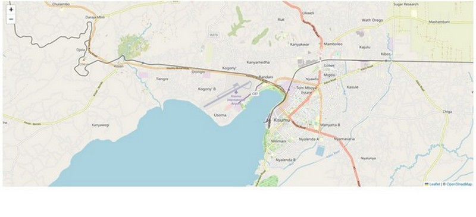

Chapter 2 First Leaflet Map
2.1 Setting the superstructure
We had earlier mentioned that Javascript, otherwise shortened to JS is the life of the party when it comes to webpages. In other words, it makes your web pages interactive. It’s like the additional component that makes you HTML pages move from static to responsive.
Creating a leaflet map is not like creating any other HTML web page. You have to set up the leaflet essentials in your HTML page first. Create a new html document called map.html. This will be the html document that will act as the structure which will house our webpage to be created using JS. Using VS Code, create map.html and paste, or preferably, type the following code.
<!DOCTYPE html>
<html lang="en">
<head>
<title>Leaflet Maps</title>
<meta charset="utf-8">
<link rel="stylesheet" href="styles.css">
<link rel="stylesheet" href="https://unpkg.com/leaflet@1.9.3/dist/leaflet.css"
integrity="sha256-kLaT2GOSpHechhsozzB+flnD+zUyjE2LlfWPgU04xyI="
crossorigin=""/>
<script src="https://unpkg.com/leaflet@1.9.3/dist/leaflet.js"
integrity="sha256-WBkoXOwTeyKclOHuWtc+i2uENFpDZ9YPdf5Hf+D7ewM="
crossorigin=""></script>
</head>
<body>
<div id="myMap">
<script src="main.js">
</script>
</div>
</body>
</html>
You may be wondering why we have two <link> tags. “Won’t they confuse the webpage or something?” You may wonder. Same thing for the two <script> tags, one at the head and the other at the <body> tag. The answers is ‘No’. Once a html script is loaded in our browser, assuming its the map.html we’ve created, the browser reads it from top to bottom. In our html script, the browser will apply the styles defined in styles.css to the html elements. To make matters clearer, the following script is what is contained in the styles.css:
#myMap {
height: 600px;
}Therefore, the browser will display everything contained in the <div> inside the <body> tag at a height of 500px. This is because the <div> contains the ID myMap which has been referenced in the local stylesheet as #myMap. Don’t fret about what how things outside the <div> will be displayed since for our webmap making purposes, hardly will we code anything outside the <div> tag.
Now to the two <script> tags. One refers to the online JavaScript library. The src attribute is in fact linking to a webpage as you can see from the protocol https. The second, housed under the <div> tag, references to our local JavaScript file which shall contain all the code to transform our html page to a webmap ninja –lines, polygons and other cool stuff.
2.2 Beautifying the house
Think of the html document as the superstructure, like a huge multistorey building just finished. Though the structure has the best architectural design, it just looks all grey with no life unless we call some interior and exterior designers to add some color. That’s what main.js file, pointed to by the <script> tag in the html document will precisely do.
Open your VS Code, and assuming you had already created main.js already, (if not, create one now), insert the following code into the .js file.
var map = L.map('myMap').setView([-0.0884105,34.7299038], 13);;Take a pause.
Breath in, breath out.
You will learn something very important here. In fact, it is the crux of what makes Leaflet work. Your future of understanding leaflet hinges on this code.
The L.map() class we just used is what initializes the leaflet map. Everything within the <div> is displayed thanks to this class function. It is referred to as a factory function because it uses the method map to return an object.
The setView method sets the view of the map (geographical center and zoom) with the given animation options. It’s properties are Latitude-Longitude, zoom number and other options. If you would like to view the humongous leaflet reference, get it here.
In our case we just inserted the Lat-Long and zoom number.
Try loading your map.html. All you see is a grey canvas with zoom options. This is because we haven’t added a tilelayer yet. A tileLayer is a set of web-accessible tiles that reside on a server. A tile is an individual image or vector file from a server which are collectively joined together to form the webmap. If you’ve zoomed into a webmap, say Google Maps and noticed boxes appearing as you zoomed in or out, those are tiles.
Let’s load an example of a common tile layer–the Open StreetMap–into Leaflet.
L.tileLayer('https://tile.openstreetmap.org/{z}/{x}/{y}.png', {
maxZoom: 19,
attribution: '© <a href="http://www.openstreetmap.org/copyright">OpenStreetMap</a>'
}).addTo(map);
Reload your html page again. What do you see?
knitr::include_graphics(rep("D:/gachuhi/my-leaflet/images/kisumu-leaflet.jpg"))
What L.tileLayer has done is retrieve the web tiles from the url source provided, and within the dictionary that follows the url, zoom level (maxZoom) and map attribution (attribution) have been provided. When working with leaflet, the dictionary, indicated by the curly braces {} houses most of the additional class options other than the key one(s). In this case we used the additional options of maxZoom and attribution. Finally, the method addTo adds the layer to the given map or layer group. Here, our webtile is added to the var map which only contains the setView properties.
A very influential person said Kisumu located in Kenya is a town with great potential. How about dispalying it to the whole world to realise it!